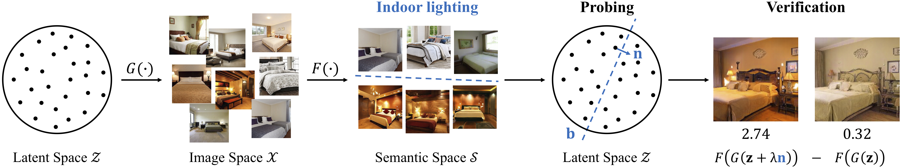

Results
Identifying such a set of manipulatable latent variation factors facilitates semantic scene manipulation.
 |
Check more results of various scenes in the following video.
Semantic Hierarchy Emerges in Deep Generative Representations for Scene Synthesis |
||
Ceyuan Yang*, Yujun Shen*, Bolei Zhou |
||
The Chinese University of Hong Kong |
||
[Paper] [Code] |
||

In this work, we show that highly-structured semantic hierarchy emerges from the generative representations as the variation factors for synthesizing scenes. By probing the layer-wise representations with a broad set of visual concepts at different abstraction levels, we are able to quantify the causality between the activations and the semantics occurring in the output image. The qualitative and quantitative results suggest that the generative representations learned by GAN are specialized to synthesize different hierarchical semantics: the early layers tend to determine the spatial layout and configuration, the middle layers control the categorical objects, and the later layers finally render the scene attributes as well as color scheme.
Identifying such a set of manipulatable latent variation factors facilitates semantic scene manipulation.
|
Check more results of various scenes in the following video.
@article{yang2019semantic, title = {Semantic Hierarchy Emerges in Deep Generative Representations for Scene Synthesis}, author = {Ceyuan Yang, Yujun Shen, Bolei Zhou}, journal = {arXiv preprint arXiv:1911.09267}, year = {2019} } Other excellent work: InterFaceGAN, GANSteerability